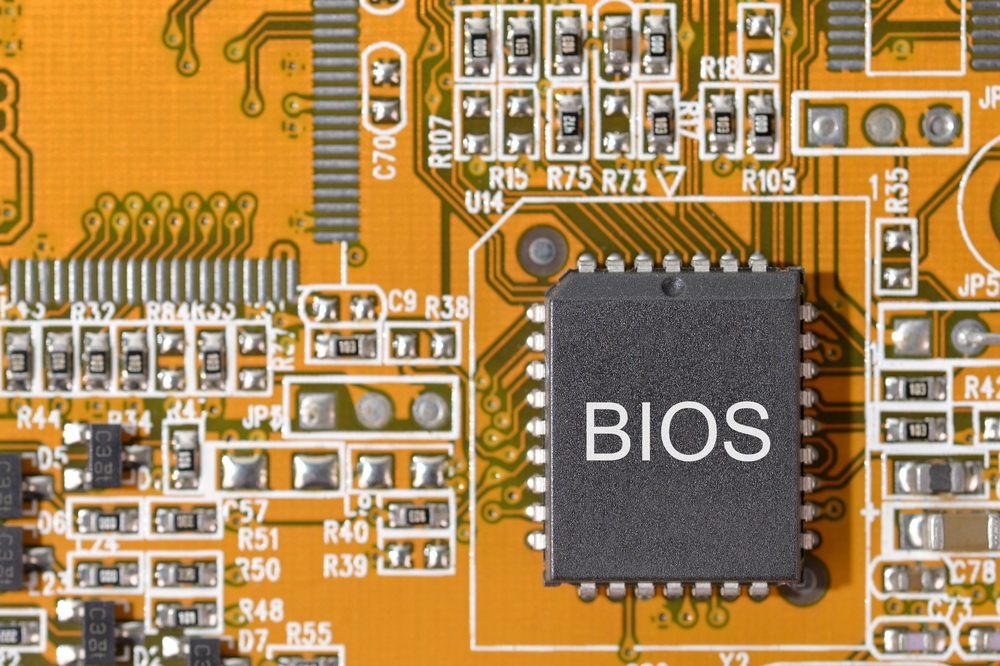

bios, ec, ram عیب یابی قطعات

در اینجا یک لیست بسیار کامل و جامع برای دیباگینگ BIOS، BIOS EC و RAM به زبان فارسی ارائه شده است. این لیست شامل تمامی مراحل، ابزارها، نکات و تکنیکهای ممکن است که میتواند به شما در تشخیص و رفع مشکلات کمک کند.
1. دیباگینگ BIOS
مراحل کلی:
بررسی سختافزار:
اطمینان از نصب صحیح CPU، RAM، کارت گرافیک و سایر قطعات.
بررسی اتصالات برق و داده (کابلهای SATA، PCIe، و غیره).
بررسی باتری CMOS:
بررسی ولتاژ باتری (معمولاً باید 3V باشد).
تعویض باتری در صورت نیاز.
بررسی کدهای خطای POST:
استفاده از کدهای بوق (Beep Codes) یا کدهای نمایشی روی صفحه برای تشخیص مشکل.
مراجعه به دفترچه راهنمای مادربرد برای تفسیر کدها.
بررسی ورژن BIOS:
بررسی ورژن فعلی BIOS و مقایسه آن با آخرین ورژن موجود در وبسایت سازنده.
بروزرسانی BIOS:
استفاده از ابزارهای بهروزرسانی BIOS ارائه شده توسط سازنده مادربرد.
اطمینان از قطع نبودن برق در حین بهروزرسانی.
ریست تنظیمات BIOS:
بازگرداندن تنظیمات BIOS به حالت پیشفرض (Load Default Settings).
استفاده از جامپر Clear CMOS روی مادربرد در صورت نیاز.
بررسی مشکلات نرمافزاری:
بررسی تداخل نرمافزارهای سیستم با BIOS.
غیرفعال کردن تنظیمات Overclocking در صورت وجود مشکل.
ابزارهای مفید:
CPU Z: برای بررسی اطلاعات دقیق سختافزار و BIOS.
HWInfo: برای بررسی جزئیات سختافزار و سلامت سیستم.
BIOS Update Tool: ابزارهای بهروزرسانی BIOS سازنده مادربرد (مانند ASUS EZ Flash، MSI Live Update).
2. دیباگینگ BIOS EC (Embedded Controller)
مراحل کلی:
بررسی اتصالات:
اطمینان از اتصال صحیح کابلهای برق و داده به EC.
بررسی ولتاژ:
استفاده از مولتیمتر برای بررسی ولتاژهای خروجی EC.
بررسی دما:
بررسی دمای سیستم و اطمینان از عدم overheating.
بررسی Firmware EC:
بررسی ورژن Firmware EC و بهروزرسانی آن در صورت نیاز.
بررسی خطاهای EC:
استفاده از ابزارهای تشخیصی سازنده برای بررسی خطاهای EC.
بررسی سختافزار مرتبط:
بررسی سلامت قطعاتی مانند باتری، شارژر و پورتهای USB.
ابزارهای مفید:
EC Firmware Update Tool: ابزارهای بهروزرسانی EC سازنده لپتاپ یا مادربرد.
HWMonitor: برای بررسی ولتاژ، دما و سایر پارامترهای سیستم.

3. دیباگینگ RAM
مراحل کلی:
بررسی اتصالات:
اطمینان از نصب صحیح ماژولهای RAM در اسلاتها.
تمیز کردن اسلاتها و پایههای RAM با استفاده از هوای فشرده.
بررسی اسلاتها:
تست هر اسلات RAM با استفاده از یک ماژول سالم.
بررسی سازگاری:
مطمئن شوید که ماژولهای RAM با مادربرد سازگار هستند (فرکانس، ولتاژ و نوع RAM).
بررسی خطاهای RAM:
استفاده از ابزارهای تشخیصی مانند MemTest86 برای تست RAM.
بررسی تنظیمات BIOS:
بررسی تنظیمات مربوط به RAM در BIOS (مانند XMP Profile).
تعویض RAM:
تست هر ماژول RAM به صورت جداگانه برای تشخیص ماژول معیوب.
ابزارهای مفید:
MemTest86: ابزار استاندارد برای تست RAM و تشخیص خطاها.
Windows Memory Diagnostic: ابزار داخلی ویندوز برای تست RAM.
CPU Z: برای بررسی اطلاعات دقیق RAM (فرکانس، تایمینگ و غیره).
4. ابزارهای جامع برای دیباگینگ
AIDA64: ابزار جامع برای بررسی سلامت سختافزار و تشخیص مشکلات.
HWiNFO: برای بررسی جزئیات سختافزار و تشخیص مشکلات.
Prime95: برای تست فشار CPU و RAM.
CrystalDiskInfo: برای بررسی سلامت هارد دیسک و SSD.
5. نکات مهم و پیشرفته
پشتیبانگیری:
قبل از هر تغییر در BIOS یا Firmware، از اطلاعات مهم خود پشتیبان بگیرید.
استفاده از Flashback BIOS:
در صورت عدم بوت سیستم، از قابلیت Flashback BIOS برای بهروزرسانی بدون CPU استفاده کنید.
بررسی Overclocking:
در صورت Overclocking، تنظیمات را به حالت پیشفرض بازگردانید.
بررسی مشکلات نرمافزاری:
بررسی تداخل نرمافزارهای سیستم با BIOS یا RAM.
بررسی مشکلات سختافزاری:
بررسی سلامت سایر قطعات مانند منبع تغذیه (PSU) که ممکن است بر عملکرد BIOS و RAM تأثیر بگذارند.
6. مراحل پیشرفته برای مشکلات پیچیده
بررسی مدارهای مادربرد:
استفاده از نقشههای مدار مادربرد برای بررسی اتصالات و قطعات.
بررسی ICها و قطعات الکترونیکی:
بررسی سلامت ICهای مرتبط با BIOS و RAM.
Firmware سایر قطعات:
بهروزرسانی Firmware کارت گرافیک، SSD و سایر قطعات.
بررسی مشکلات ناشی از نویز الکتریکی:
استفاده از فیلترهای نویز و اطمینان از اتصال صحیح زمین.